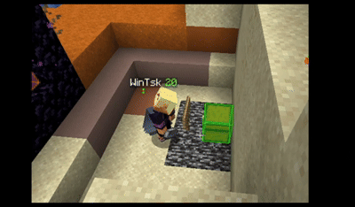
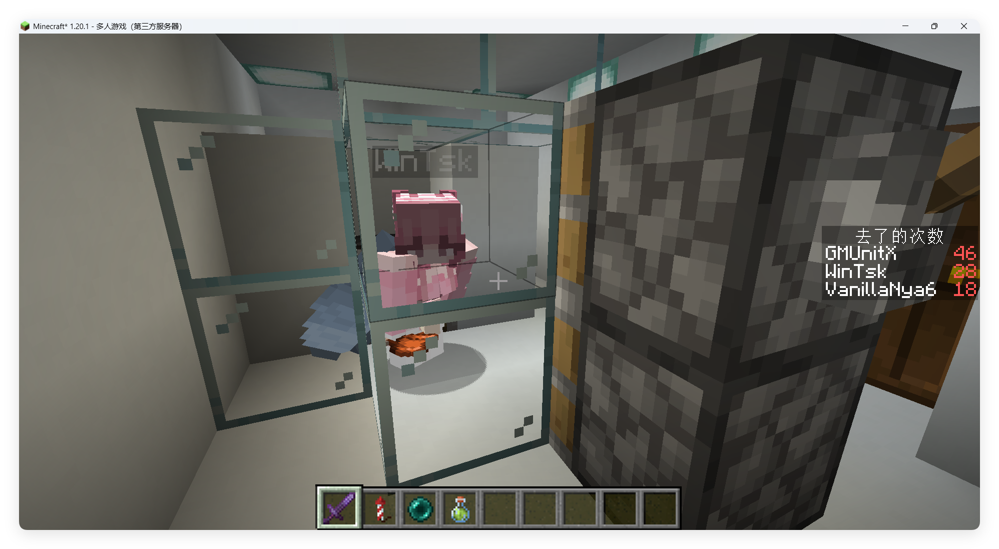
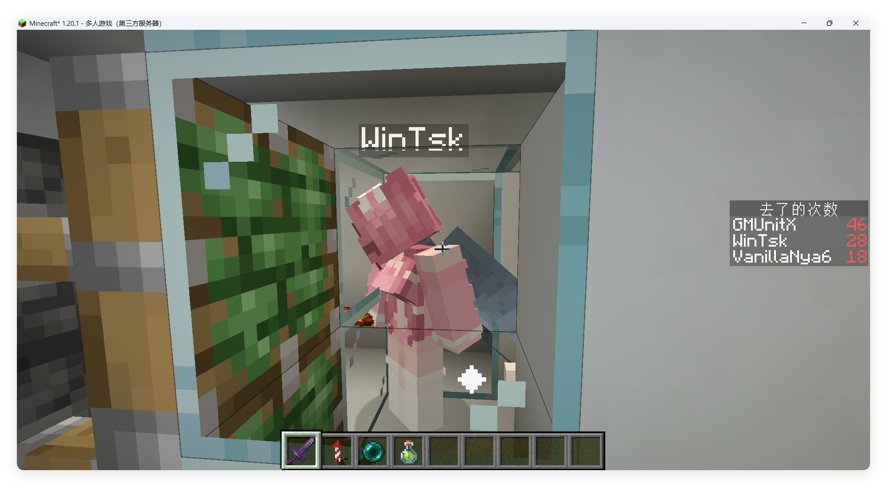
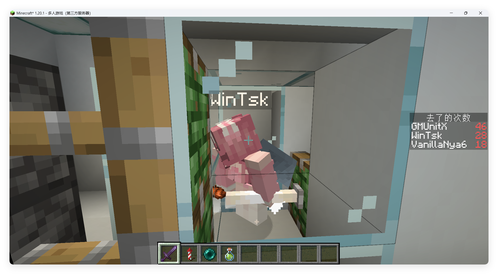
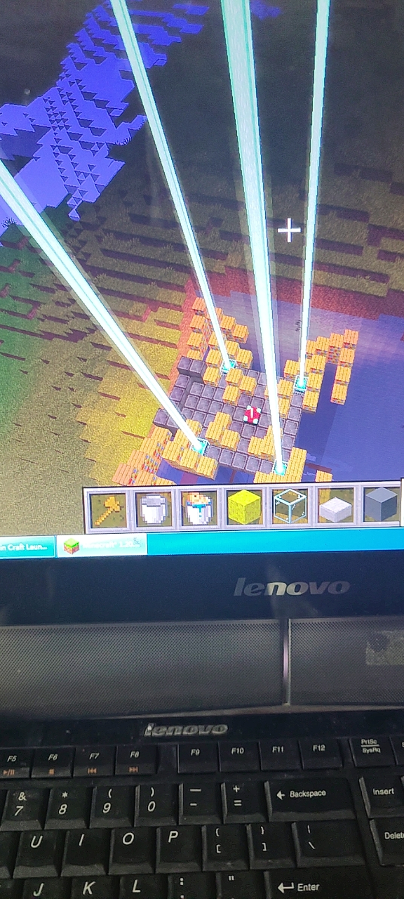

发生时间：2025年8月
主要守方：VanillaNya5(香草)
她当过服主，指令造诣较高，入服时间稍晚。
客户端有多达130个辅助模组...其中包含Wurst
主要攻方：GMUnitX(GMX)
MC新手，对指令了解不深，但懂得编程。
客户端比较朴素，有玩家模型美化
服务器为1.20.1Fabric创造服(无模组)，双方都是OP，能使用所有指令(包括stop)。
服务器为群内私有，群为GMX粉丝群(群主为GMX)，服主是Setinne。
香草：114514 250 114514的基岩平台
保护范围：r=50000，遣送回出生点→流放末地→附加kill
权限验证：2个tag缺一不可
优势：完全无法靠近、无法瞭望，地址保密(虽然泄露了)
GMX：出生点附近地下的合金地下室
保护范围：r=40，进入就死
权限验证：name=GMX，假如他大号废了就被困在外头了
优势：出生点旁边可能是有常加载
GMX的地下室通过他的传送踏板泄露坐标，随后香草通过客户端玩家透视看着他飞进洞穴走回基地。
GMX尝试了各种奇怪的指令，比如排斥立场和必杀立场(靠近他就死)，还有把别人改成生存然后关在基岩房里。香草表示这场权限之战最后会演变成循环"gamemode @a s"和"kill @a"，GMX说他只是在Cosplay大运(指他的必杀立场，走哪哪死人)
香草需要一个地方安放指令组，所以她像自己的服务器一样挑了个偏远位置，但GMX不请自来直接tp导致坐标泄露，她很快补上了保护。
香草用带名字的蝙蝠蛋快速施放指令，比如回基地，而GMX用的是踏板、手动tp甚至用鞘翅飞回去。
杂谈：{'1','一种NBT很长的物品，和禁人塔原理类似，会触发数据包大小溢出，客户端与服务器连接断开，很早就被应用于2b2t等无政府服务器。部分账号被封是故意为之()','禁人盒'}泄露(20日晚20点左右)
香草不慎泄露禁人盒，她5个号暂时或永久废掉，大家以为是WinTsk的指令导致进不去服务器，但香草一直在强调是她“黑了”服务器，无人在意。
杂谈：香草造了个禁人箱(20日22:22)
她在出生点附近放了个箱子，里头是禁人盒，盒子如果变成掉落物就会踢掉周围的玩家直到掉落物自然刷掉。她认为这会很有趣且毫无危险，偶尔可以打开箱子玩玩。当时GMX无法上线，无人注意。
杂谈：香草把自己ban了(20日23:20)
她不慎捡起禁人盒导致大号废了。
杂谈：禁人箱引起注意
她表示这个东西拆了就会导致附近的人被ban几分钟，并对于不可拆除性夸大，服主和GMX严重高估了它的危害，解释后懂了，GMX决定尝试拆弹。
杂谈：香草让WinTsk体验被禁人箱叉出去，并录了个gif发到群里
这引发了一些对原理和结果的讨论

杂谈：香草的禁人箱被拆(21日8点)
GMX直接用fill覆盖禁人箱，禁人盒没掉出来，所以什么也没发生
讨论：要权限(21日8:35)
她之前把自己大号永久ban了，她想找服主索要管理，但因为之前的禁人箱事件服主不给。
讨论：香草的计分板(21日21点)
公告栏里的神秘小广告和高潮次数(死亡榜)在群内引发讨论
相关图片GMX把WinTsk关在玻璃房里使用神秘玩具，旁边能看见死亡榜(他提到被WinTsk给kill掉很多次)



事故：禁人盒泄露(22日晚)
香草在出生点附近不慎泄露禁人盒导致玩家被踢下线
攻：篡改计分板(23日0点前)
香草写的公告栏和高潮次数(死亡榜)被篡改
香草守：防御加固(23日4点)
现在未经授权的修改计分板会被正确的数据覆盖，把WinTsk的高潮次数-114514修正为999次(合199.8个正字)，这是她的趣味
GMX攻：循环tp入侵(23日8点)
GMX试图用循环tp突破遣返，确实成功了
香草把遣返改为流放末地
GMX攻：抢计分板(23日8:30)
GMX突然抢了香草的Scoreboard sidebar，香草回来后展开争夺，成功冗余预判gmx会删除她的计分板(她写了重建)，最终稳定显示香草的公告栏(可以了解一下自闭链)，所以她赢了。
讨论：fill香草的基地(23日10点)
GMX威胁说要用fill填充香草的基地，但她早就预料到了并写了基于结构方块的回溯，可能是回溯和未知原因导致的卡顿让GMX完全坚定要拆除香草的基地。
讨论：香草的计分板(23日11:20)
GMX发现香草的公告栏无内容显示和内容闪烁，并表示这是在自己打架
香草说是它在自己循环重建，还没修，很快修好了
GMX攻：再次tp(23日11:26)
GMX无视警告写了个如果处于旁观模式就tp到香草，这可能会触发流放至末地或去世。服务器莫名卡顿，香草被卡退
流放点位是传送门上方，所以可能掉进传送门然后被传回主世界，但GMX只显示加载界面被永久困住，不得而知。
香草帮他调回了创造模式从而脱困
讨论：kill蛋
香草的快捷kill蝙蝠蛋被她顺手用在了GMX身上(小小的恶作剧)，所以他学了过去并且用在香草身上，称作killer。
香草守：返回死亡点功能(23日12:48)
香草怕自己被kill于是想把基岩版的防kill搬过来，但失败了，于是退而求其次做了这个功能。
死亡后复活会立刻传送回死亡点，GMX认为很危险，因为会回到危险区域，但她提前预料了，写了2秒返回超时。
GMX守：登录验证
GMX每次上线都需要被加一个tag"GMX1024"才能移动
GMX攻：GMX参观香草的登录验证(23日14:05)
因为GMX发觉香草几天前登了他的号但没发现做了什么，所以之前也偷偷登香草的号并成功篡改权限验证截图发给香草，被她发觉了顶号，不知道是什么时间，所以放在这里讲了。GMX想交换参观登录验证，于是顶了香草的号，香草直接顶回去了两次，他表示发现这个登录验证甚至无法连接到服务器，问是不是IP验证(但指令显然做不到)
香草攻：顶号循环tp(23日14:51)
GMX的登录验证限制了未登录时的角色位置，香草不需要他的密码，循环tp即可突破。
香草用GMX的号，用他自己的手段闯入了他自己的基地，截图发给GMX，他表示震惊：kill理论上应该是进不去的，但他自己的号自然不会被kill，香草没有告诉他。
香草攻：窃取登录密码(23日15:05)
香草用clone复制了GMX的登录验证指令组到地表并直接翻阅，随后她直接告知了他密码泄露，不过没有说方法(因为他会反过来用)
这次打击直接让GMX意识到处于绝对下风，顶号只属于香草，他甚至密码都被偷了。这一次估计直接促成他加快彻底拆除。
最终攻势：降维打击
服主认为竞赛导致服务器卡顿，于是GMX拆除了自己的地下室，并沟通专门拆除香草基地。关闭了命令方块，GMX直接进入香草基地并删除了结构，把两个区块清了
香草不仅基地被拆了，还被deop和设为生存。关掉了命令方块所以gmx可以直接进入香草的基地查个清楚，直接删除了结构，核心原因是：香草因为没有预料服主会出手，棋差一'着'，此处的“着”是她没写隐藏结构方块，如果写了就能像鬼一样回溯，只能建新档那种。虽然大家的基地都拆了，但香草输了(主要是因为被deop)。香草的基地里有各种功能性命令组，但gmx的基地里没什么特别的，香草的失败代价比gmx沉重4倍。服务器加装了EasyAuth。（看来登录验证那次斗法他真的感觉自己败了）
香草：斗法、在这个档内保持基地完好
GMX：斗法、入侵香草基地→拆除香草基地
双方目标不对等，香草的主要目标并不是入侵GMX基地，破坏他的纸壳子也没意义。
基地位置暴露后没有重新选址、没有隐藏结构方块、完全没有破坏意图、防御不够极端(她可以在自己下线时在基地释放禁人盒，但她懒得这么做)、没有更多备份(她太懒了)。
基地位置和结构暴露、防守形同虚设(对物理破坏完全无防御)，这让他的每一个命令方块都能被香草随意翻阅和修改，为数不多的成功入侵但没有直接破坏(虽然说很伤人，不过服主觉得这个基地该拆)。
GMX的所有行动基本都对香草保密(比如高频tp入侵和顶号)虽然会截图给香草看达成的结果，GMX一直追问香草是如何做到的，而她因为高傲也会披露一些原理(比如常加载)。因为香草早就开始采用顶号，所以才能极快的反应过来gmx偷用她的账号。香草采用生物蛋快速调用命令，比如“home”直接回基地(不可能每次手动回去吧)，“kill”清除周围实体，“ban”直接释放禁人盒(这种掉落物会踢掉周围4个区块的玩家，直到自然刷新，但她知道后果，她根本没有使用它)，在被gmx目击和gmx被使用“kill”后仿制。
GMX自己建立了“中控中心”用命令方块管理全服(香草用最后的权限进去翻阅了一遍)，GMX觉得要把香草ban了，但她还有别的号，香草威胁说她还藏了别的结构，GMX认为deop可以限制结构方块使用，香草辩称她有一千种办法无需权限调用结构，GMX无解了，表示搬迁地表建筑至新地图，香草驳建筑内有后门，GMX表示地基以下不搬迁(她已经无语了)。香草对竞赛很失望，没有打算继续行动，后来也关服了。2026年1月11日香草让群友去服务器备份里顺便看一眼，这才发现了遗址上的信标和书架，可能是庆祝，感觉像在射击游戏里被人打死之后鞭尸嘲讽。

过了两天(1月13日)才得知这个信标是Game_SR建的，他以前试图传送到GMX找他玩，往周围飞了一段就发现了这块空地，因为很空就建了个信标
GMX于2026/1/4阅读后的评价是：没有不正确的地方，但感觉把他写的很坏。他还有项目所以不会写他视角的博客。(他源源不断的设想非常需要时间，去忙AI相关的事了)
聊天记录香草：我这里有一篇关于去年8月的文章，你先过来看看。我需要你核验一下我们俩的视角。(链接)
GMX：*与其他人聊天*
香草：@GMX 你刚刚是不是无视我了喵(表情：握草！你怎么这么坏)
GMX：没有
GMX：我看过了，但是不知道该作何评价
香草：我需要核对一下双方视角。文章有不正确的地方吗。(表情：甘城猫球问号)
GMX：*转发了AI写的构架到群里*
香草：你可以回一下我的消息。
GMX：没有(注记：回复指没有不正确的地方)
GMX：只是感觉把我写的好坏
香草：我知道。
GMX：那我也要发博客写你喵(表情：猫娘举着炸药桶)
香草：我也想看你的文笔和视角。(表情：甘城猫球问号)
GMX：（实则是根本不会去写）
香草：但我很好奇。
GMX：（光是这堆设想都够我忙的了，根本没时间）
GMX：而且好像也没什么意义
香草：好吧喵。
香草(回复意义)：其实回忆一下还挺不错。
GMX：姐姐坏坏
GMX：在文章里把我写的像个坏人(表情：败北、难受，使用时想法不明)
香草：我是参与者，难免主观啦。(表情：被卖掉了)
香草：另外你有读我偷你密码的方法吗喵。
香草：嘻嘻喵。(表情：酒狐摇尾巴)
GMX：我知道会被偷
GMX：所以当时故意设了一个不用的密码
香草：怎么会有人给自己的mc设一个正常密码呀喵。
GMX：结果居然是克隆
香草：嘻嘻喵。(表情：得意的神态)
GMX：其实最初直接deop就结束战斗了
香草：(表情：爱丽丝红温)(表情：桃井磕到甲沟炎而倒地)(注记：表情表示很生气但无能为力的死了)
之后聊了AI专业相关话题，香草跟着聊了几分钟，但因为什么也不知道搭不上话，所以去打游戏了。
笔记并不完全正确，仍有漏洞。
要成功防御一个基地，按优先级：坐标保密、禁止靠近、备份、权限验证、防御物理破坏、防御远程分析
显然我只做到了回溯：防御物理破坏，他先是获取了坐标，然后通过各种漏洞进入基地，权限验证也是后来补上的(被顶号)，没写防远程分析，他也可以用clone把我的基地切片研究
针对坐标泄露：基地内不能有任何实体(尤其是玩家)否则会被/data窃取，或是选择器配坐标二分法逐渐逼近得出精确坐标
保护范围不能低于服务器视距，否则会被看光
备份很重要，这是复活的前提，给自己更多机会
即使服务器有插件对于登录验证也不能松懈，可以自己写点花活。权限验证不能让对方知道，比如tag和score明显是明文了
为了防止对方用clone复制走自己的基地，首先要坐标保密，还可以在自己基地里藏"炸弹"，检测到不处于允许的坐标就立刻大范围自毁
防御不能依赖命令方块，可以在检测到命令方块关闭时立刻用红石激活结构方块备份后自毁，等命令方块开启时自动载入备份
如果都做到了，只要专业人员不介入写插件，就是服主也得老实开新档
ps：其实我觉得某些手段太阴间了，怎么能删别人数据呢(tag和scoreboard)？另外但凡有点道德就不会ban和deop对方，不然就纯拼手速了。
可能是23日：GMX通过删除香草的权限tag导致她自己被流放至末地，成功恶作剧了她，但她没修，她还在忙着写返回死亡点或者登录验证
时间不明：GMX的指令失误，试图让所有实体传送到香草，导致除香草外的实体被困住(包括GMX)，香草操作受限。他把她ban了之后失去执行目标自然脱困了
香草把瞬间死亡药水(治疗255能杀死创造)的实体形式和禁人箱存为结构，但她没有用上，且未被发现。